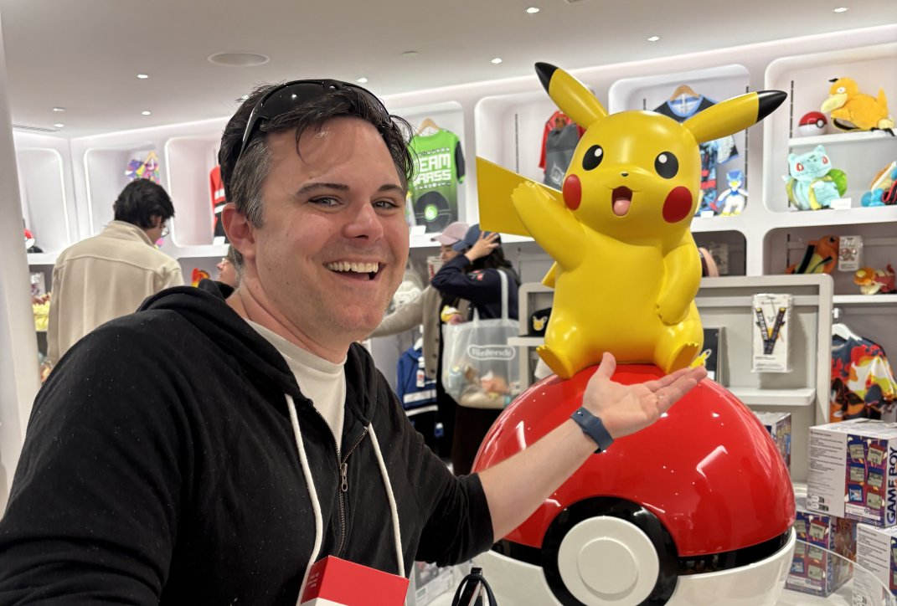

Know Your Professor
Some of these statements about Dr. Avilla are true. Some are completely false.
Take your best guess at each one — you'll find out the real story right after you answer.
5 statements
True or false
≈ 3 minutes
Pick one, then tap Submit.
How you did